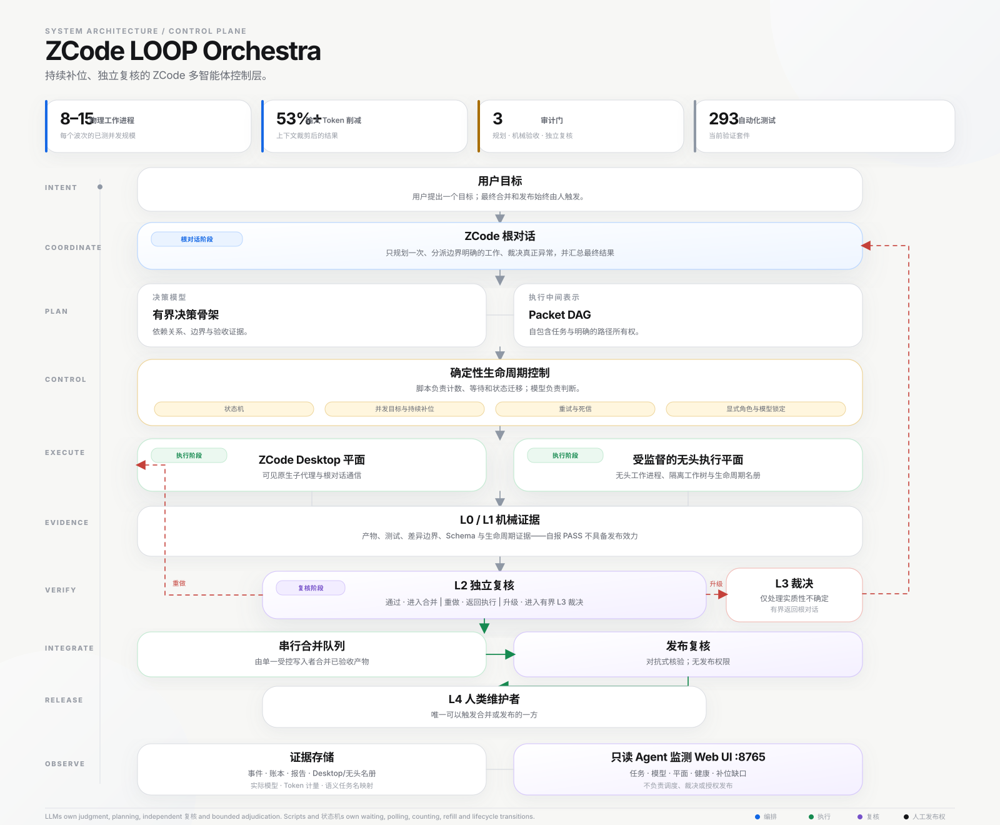
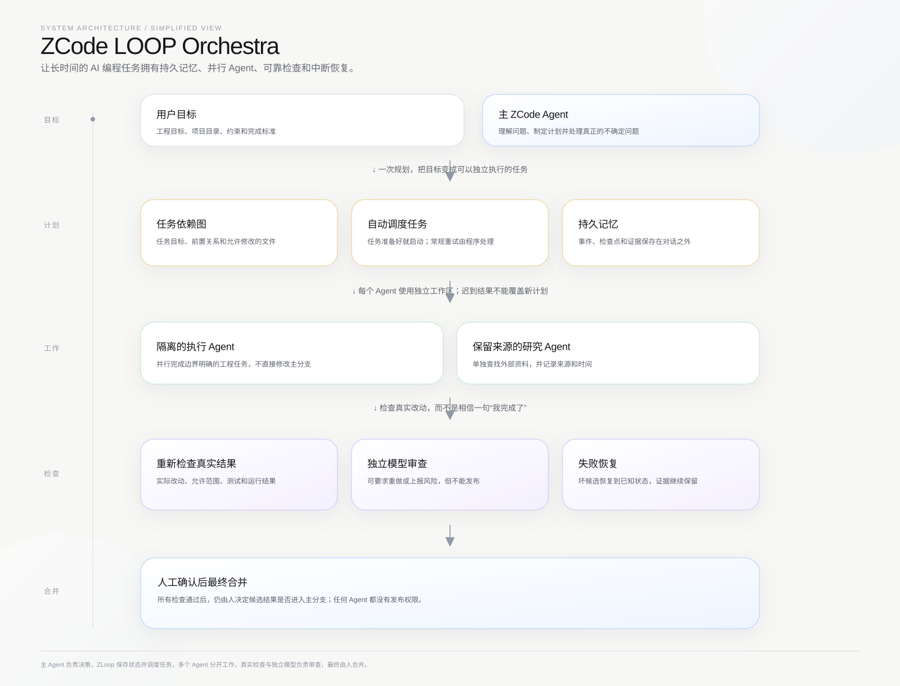

工作边界
每次启动使用独立工作目录；差异先回到 staging，规范分支不作为 worker 的直接写入目标。
从目标、任务包和隔离执行，到重新验收、失败恢复与人工晋升：这两张图展示 ZCode LOOP 真正承担的控制边界。
从用户目标到人工晋升，右侧同时说明持久化状态、身份围栏、证据记录和审查包的边界。

只记住五件事：输入目标、准备任务、持续推进、验收候选、人工发布。

每次启动使用独立工作目录；差异先回到 staging，规范分支不作为 worker 的直接写入目标。
执行者的“完成”只是报告。LOOP 会在 staging 重新检查路径、哈希、Schema 和验收命令。
失败候选恢复并阻塞，审查可以升级；只有人执行最终的 zloop stage promote。